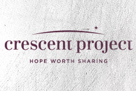

URBAN
- Talk and Discussion
- Interpreting the cause and effects of poverty, racism, and other issues facing our cities and creative approaches to those problems.
- Discussing established systems / expectations and brainstorming solutions. Thinking through where these issues connect with each individual.
- Speaker - Tim Streett
- Hands-On Response
- Work project involving a youth organization, homeless shelter, urban gardening, etc.
- Discussion & Design
- Designing possibilities for the inner-city [marketplace, education & healthcare opportunities, food/lodging, stability, literacy, and neighborhood restoration] and/or picking a specific issue and designing a holistic approach to that issue.
- Exploring the possibilities of sustainable ministry to the inner-city.
SPEAKER:
Tim Streett
Assistant Director of Shepherd Community & Executive Director of Jireh Sports whose mission is to meet the spiritual, physical, mental and emotional needs of urban youth through significant relationships with mentoring adults developed around unique sports, recreation, and educational opportunities. Tim also has a teaching ministry focusing on issues of racial reconciliation and forgiveness. Tim received his Bachelors Degree from Purdue University and Master of Divinity from Gordon-Conwell Theological Seminary.
GLOBAL
- Talk and Discussion
- Exploring immigrant needs and issues.
- Exploring the challenges of sharing life and Jesus with Muslims.
- Speakers - Crescent Project & Exodus Refugee Immigration
- Hands-On Response
- Work project involving immigrant families, manual labor on a guest house, etc.
- Creative Response
- An artistic/journalistic capturing and retelling of the family's story.
- Optional Talk, Discussion, & Design
- Interpreting the cause and effect of established systems and expectations.
- Designing possibilities for ministry to the immigrant population [Welcoming & helping them feel settled, education, ESL/literacy/mentorship, food/lodging, stability]
- Exploring the possibilities of international student ministry.
SPEAKERS:
Exodus Refugee Immigration
Crescent Project
POP
- Talk and Discussion
- Discerning the subtleties of how the arts, media, and public policy shape our world view.
- Rethinking beauty, goodness, and truth.
- Speakers - Joe Boyd, Mike Kaufmann
- Hands-On Response
- Do an afternoon project partnering with an organization like The Viewfinder Project which teaches kids to name what is true and beautiful through the medium of photography.
- Creative Response
- Create a mixed-media piece turning trash into beauty.
- Design
- A business / marketing model for an actual company such as Liz Alig Fair Trade Fashion.